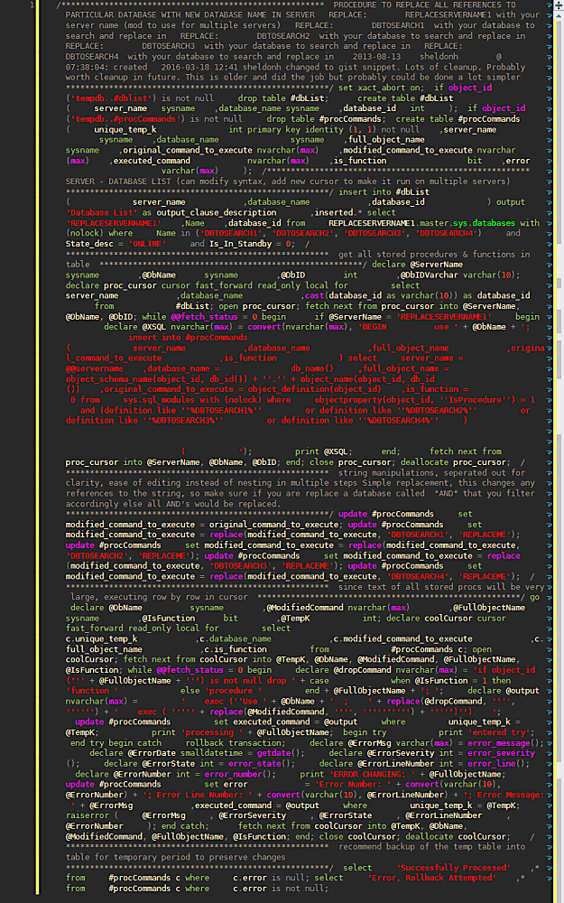

SQL is pretty verbose compared to some languages. It's a pretty big disappointment that I have to type out select customer from dbo.customers where id = 2 instead of a much simpler syntax like dbo.Customers ' Customer like Powershell might offer. As I considered the disappointing verbosity of sql server, I considered that perhaps one way to reduce network traffic, save electricity, and aid the garrulous language known as sql might be to require all code running to be minified.Think about the potential savings in bandwidth and having to scroll. Anyone who complains about this should just realize there is a thing called word-wrap which will solve all the readability problems. No more need for Red Gate Sql Prompt's beautiful yet wasteful formatting options. (sorry RG). In fact, no more debates on readability of formatting standards at all!

In a file size comparison on this small small query I found a full 1KB size savings.
| File |
Size |
| WITH-LINE-BREAKS.sql |
9 KB |
| NO-LINE-BREAKS.sql |
8 KB |
If you extrapolate this over a larger query I found a 20% reduction.
| File |
Size |
| LONG-NO-LINE-BREAKS.sql |
129 KB |
| LONG-WITH-LINE-BREAKS.sql |
160 KB |
With a heavy traffic OLTP system, this might reduce traffic IO tremendously and reduce server energy costs. I did consider trying to calculate the wattage savings this might entail, but I plead laziness. I also considered running wireshark to analyze packets to compare the size to validate what magic the compression and other parser functions perform on the sent query, but decided I had better uses for my time. .... Maybe the next brilliant idea would be to name all your tables consecutive numbers like dbo.1, dbo.2, dbo.3 and so on. Since these names are stored in a nvarchar format in system tables, it might optimize the storage and performance of the system tables.... So many good ideas, so little time......
this post was inspired by the wonderful contributions to bad ideas that Brent Ozar and his team of eccentric consultants donated to the community to cause mayhem for those stupid enough to try them out. Thanks Brent :-)